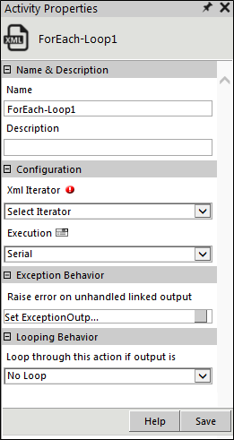
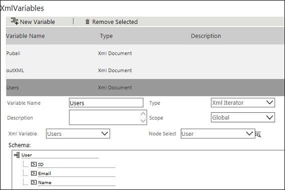
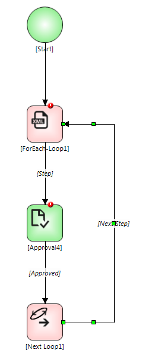
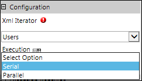
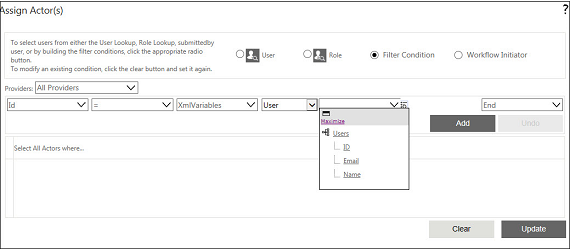

No
Activity description:
The For-Each Loop Activity is used to loop an activity through a collection within an XMLIterator Variable. It allows repeated execution of an activity or group of activities. It must always be used along with the Next Loop Activity.
Activity Properties:
The properties of the For-Each Loop activity can be configured in the Activity Properties window for that activity.
To access Activity Properties, do one of the following:
Activity Properties for this activity are organized under:

For-Each Loop Activity Properties
Name & Description
Specify the name and description for the activity in this group.
Name - Enter the name for the activity.
Property Type: Optional (This property needs to be set only if necessary.)
Description - Enter a brief description for the activity.
Property Type: Optional (This property needs to be set only if necessary.)
Configuration
The Configuration group has a single property for selection of the XMLIterator Variable to be looped through.
XMLIterator - Select the XML Iterator variable to be looped through. All XMLIterator variables as declared in Start activity are available for selection.
Property Type: Mandatory (This property must be set if the action is to be executed.)
Execution - Select Serial if the activity has to be looped through each item in a collection in sequence. An activity will be created for an item only after completion of the activity for the preceding item. Select Parallel to simultaneously create activities involving each item. This field defaults to Serial. Also see Example of Serial Execution.
Property Type: Mandatory (This property must be set if the action is to be executed.)
Loop through this action if output is - This property is used to specify the condition for looping the activity by selecting an activity output from the drop down.
Property Type: Optional (This propety needs to be set only if necessary.)
Looping Behavior
The property in the Looping Behavior group has been described below. You can use this property to specify the looping behavior of the activity.
Loop through this action if output is - This property is used to specify the condition for looping the activity by selecting an activity output from the drop down. The looping option for this activity is Completed.
Property Type: Optional (This property needs to be set only if necessary.)
Exception Behavior
These options of AVEVA AVEVA Work Tasks 2009 have now been integrated with Raise Error on Unhandled Linked Output in the latest version of the product.
Property Type: By default is set as NO
Each activity has the Raise Error on Unhandled Linked Output property on click of which, it shows all the default configured mapped error outputs in red with their check boxes selected.
See Mapped Error Outputs for more details.
Activity outputs:
The For-Each Loop Activity returns the following values -
Step: Displayed to indicate the loop step
Loop End: Displayed when the end of the loop is reached
Example of XMLIterator Variable in For-Each Loop
In this example, the XMLIterator Variable is used to get approval from all managers in the Managers.XML file containing the list of all users who are managers.
Managers.XML file
<Managers>
<Users>
<User id=1>
<Name>John</name>
</User>
<User id=2>
<Name>Jim</name>
</User>
<User id=3>
<Name>Victor</name>
</User>
<User id=4>
<Name>Andy</name>
</User>
</Users>
</ Managers >
Step 1: XMLIterator Variable is defined for users. The node Users holds the collection of managers.

Step 2: The Approval activity is set within a For-Each Loop activity.

Step 3: The XMLIterator Variable Users is defined in XMLIterator field of For-Each Loop properties. The Execution type is set to Parallel as the approval is to be processed simultaneously by all approvers.

Step 4: The XMLIterator Variable Users is specified in the condition for selecting actors for the approval.

Actor Selection for Approval Activity
Output: When the above workflow is invoked, Workflow Engine resolves "XMLVariables.user.users.ID". It gets the ID of each manager and assigns the task to that manager.